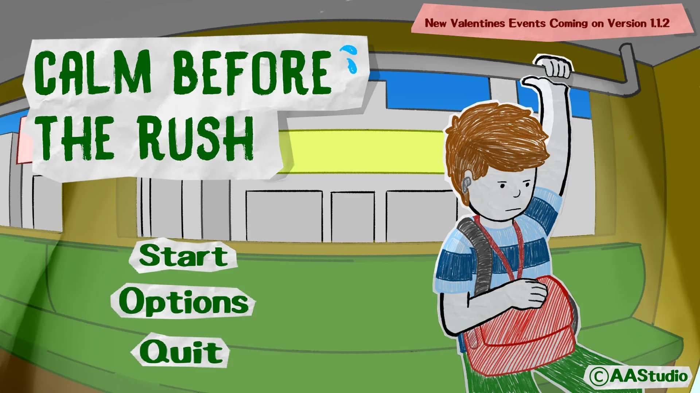
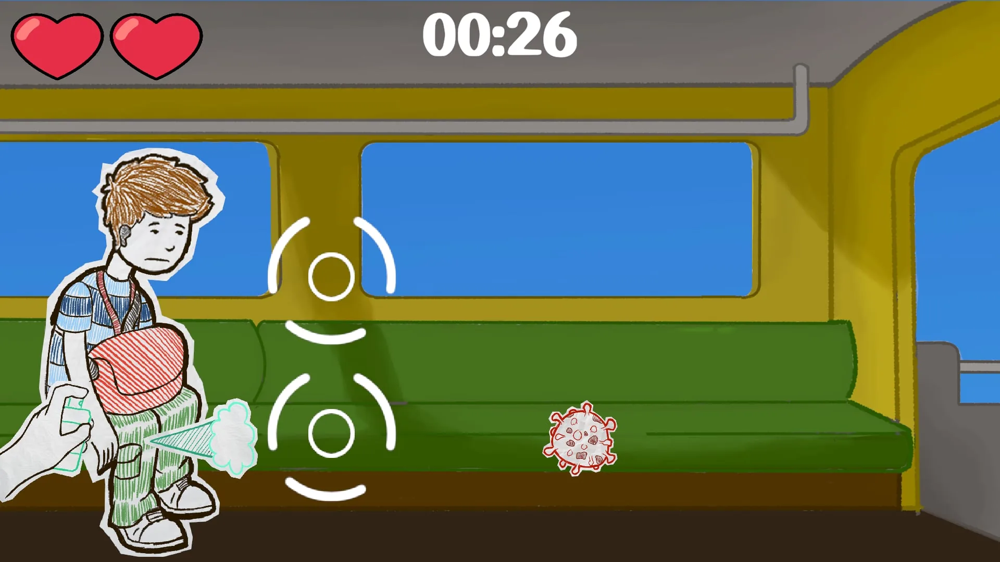
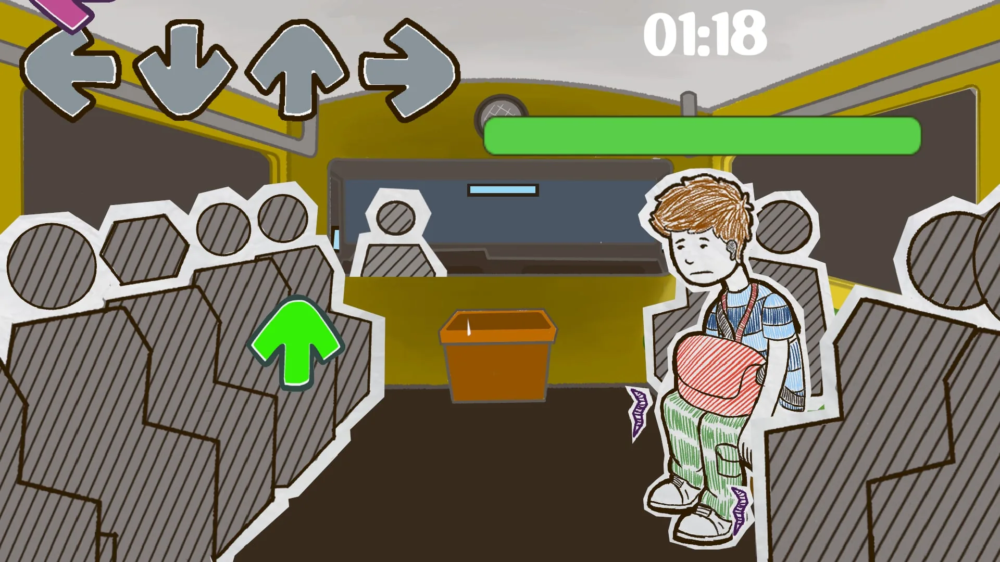
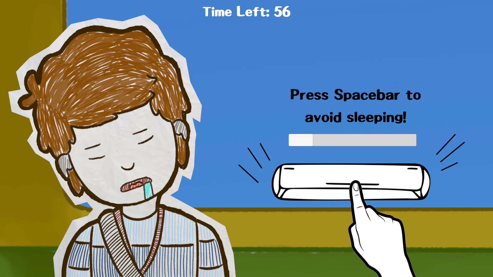

Calm Before the Rush is a simulation-puzzle game that makes sustainable commuting engaging and relatable. Set in familiar Filipino commuting scenarios, it educates players on eco-friendly choices through fun, culturally grounded gameplay—encouraging awareness and action toward reducing carbon emissions.
Solo Programmer & Technical Lead: Programmed the entire game architecture from scratch, engineering core puzzle mechanics, commuting simulation loops, user interface integration, and state management systems.
Created as a major class project challenging us to design and ship a complete, high-quality game production that balances educational value with engaging gameplay. We chose to tackle daily urban commuting challenges in the Philippines, translating sustainable transit concepts into relatable, interactive mechanics.



